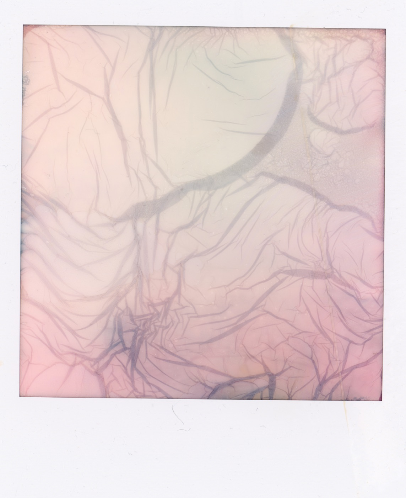

Vindere & nominerede
Vinderen kåres d. 15. november 2026
Instant Ugen er en succes, når I deltager — og det gør det ikke nemt at finde en vinder. Kort efter deadline gennemgår dommerne alle bidrag, og vi kårer én vinder og et antal nominerede.
I deltager
I løbet af uge 42 deler I jeres instants gennem formularen på "Del dine instants".
12.–18. oktoberDommerne bedømmer
Undervisere fra Multimediedesign på EK gennemgår alle indsendte bidrag.
19. oktober – 14. novemberVinder & nominerede
Vinderen og de nominerede offentliggøres her på siden og på vores sociale medier.
15. novemberVinderen
Her afsløres vinderens instant
Vinderens instant afsløres her
Vi offentliggør titel, navn og historien bag den vindende instant kort efter dommerne er faldet til ro — hold øje her fra d. 15. november 2026.
De nominerede
Endnu ikke kåret
Mens I venter
Bliv inspireret af galleriet
Se de 16 instants, der satte gang i Instant Ugen, og find selv ud af, hvordan du vil dele dine egne — i kaffe, øl eller bare i almindeligt dagslys.
Se galleriet